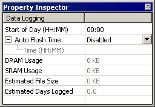
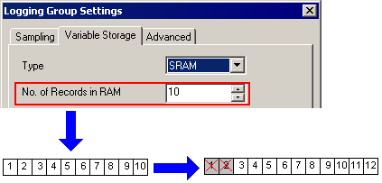
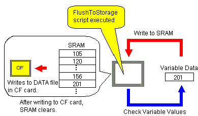

|
|
|
|
|
|
|
|
You can manage how much variable data is being stored and where the data will be stored, using one of these storage options:
DRAM – preserves the most recent data samples in the system's DRAM
SRAM – preserves a specified number of data samples in the system's SRAM
SRAM and File – uses the SRAM until its capacity is reached, in which case, the data is written to file.
To obtain a summary for all data logging groups, you can view the Property Inspector for the Data Logging node. The summary displays the estimated space used in DRAM and SRAM, the estimated File size, and the estimated number of days to reach the file size limit.


Before you download a new project or an updated project to a target that has data logging, make sure you have a method in place to flush the data in the SRAM to the secondary storage (typically the CF Card/SD Card). If you do not have a method in place, data that is stored in the SRAM before its scheduled flush to storage will be lost.
You can store variable values in the target machine's DRAM. This storage option allows you to control the amount of memory being used to store each data sample. You can define the number of data samples you want to store in the RAM. If the number exceeds what is specified, the oldest data samples are removed so that the most current data samples can be stored. In the following example, data samples 1 to 10 are stored in DRAM. When data samples 11 and 12 are logged, the oldest data samples 1 and 2 are removed.
If your target machine shuts down and restarts for any reason, your stored data in DRAM will be erased. You should not use DRAM as a storage option if you want your data preserved for the long term.
You can use the SRAM storage option to preserve a specified number of data samples for a variable. This option allows you to define the number of data samples for SRAM storage. If the number exceeds what is specified, the oldest variable data is removed so that the most current data can be added and retained. The following example shows how SRAM storage works.

If your target machine shuts down and restarts for any reason, your stored data in SRAM is saved.
Once the SRAM is full, the variable data is logged to a data file (*.dat) on the Secondary or Optional Drive.
Two events trigger the variable values in the SRAM to be logged to file: Data samples exceed the number of samples specified to store in the SRAM, or the flushToStorage script is executed.
Variable Data Entries Exceed the User-Defined Number
The SRAM can store up to the user-defined number of variable values. If the number of data records exceeds the specified number, the data is logged to a data file. As new data is added to the SRAM, the old data is removed.

If the Data Manager tool is getting the data logging files from the target machine, and then the SRAM flushes its data, because the transfer tool locks the data logging files, data from the SRAM will be cached until access to the file is re-established. For information about the Data Manager and the Command Line, see 20.5, Managing Run-time Data.
flushToStorage Script is Executed
By using this script, you can write to file the saved data that has been stored in SRAM, regardless of the time or number of entries. For more information, see flushToStorage in Chapter 18, Scripts.

Data files are saved on the CF Card/SD Card or other storage devices.
|
Data files are saved in: |
|
On the Secondary Drive (CF Card/SD Card): \public\projects\target_name\Data\Log\variable_name
On the Optional Drive: ..\target_name\Data\Log\variable_name |
Data files occupy the target machine's Secondary Drive (CF Card/SD Card) or Removable Drive. If there is not enough disk space on the storage device, variable data cannot be recorded and the following error message appears:
Variables are being logged to the CF Card/SD Card or Hard Disk. The volume is now either unavailable or full.
To determine how much storage space is required to store your sampled data, refer to the Estimated Group File Size property in the Variable Storage tab of the Logging Group Settings dialog box.
If you find target machine performance to be slow, the most likely problems are:
The number of data records specified for storage in SRAM is too low, requiring the target machine to write data to the file more often. To solve this problem, increase the No. of Records in RAM value in the Logging Group Settings dialog box.
The number of days to store data records and maximum data size values are too high and a lot of data is collected, resulting in slower performance due to the amount of variable values being logged over an increased period of time and having a larger file to access. To solve this problem, reduce the No. of Days and Maximum Data Size values in the Logging Group Settings dialog box. We recommend a maximum of 90 days' history. If you want to keep permanent records of your variable data, regularly move the data from the target machine to your database, and then delete the data on the target machine.
Data logging files are automatically deleted when the number of days that you specified have passed or you have exceeded the amount of available disk space. The oldest data files are removed.

You can use the Data Manager and the Command Line tool to copy data files from the target machine to a folder on the editor PC. See Section 20.5, Managing Run-time Data.